VMware vSphere: NetApp HCI with Cisco ACI
Contributors
 Download PDF of this page
Download PDF of this page
VMware vSphere is an industry-leading virtualization platform that provides a way to build a resilient and reliable virtual infrastructure. vSphere contains virtualization, management, and interface layers. The two core components of VMware vSphere are ESXi server and the vCenter Server. VMware ESXi is hypervisor software installed on a physical machine that facilitates hosting of VMs and virtual appliances. vCenter Server is the service through which you manage multiple ESXi hosts connected in a network and pool host resources. For more information on VMware vSphere, see the documentation here.
Workflow
The following workflow was used to up the virtual environment. Each of these steps might involve several individual tasks.
-
Install and configure Nexus 9000 switches in ACI mode and APIC software on the UCS C-series server. See the Install and Upgrade documentation for detailed steps.
-
Configure and setup ACI fabric by referring to the documentation.
-
Configure the tenants, application profiles, bridge domains, and EPGs required for NetApp HCI nodes. NetApp recommends using one BD to one EPG framework, except for iSCSI. See the documentation here for more details. The minimum set of EPGs required are in-band management, iSCSI, iSCSI-A, iSCSI-B, VM motion, VM-data network, and native.
iSCSI multipathing requires two iSCSI EPGs: iSCSI-A and iSCSI-B, each with one active uplink. NetApp mNode requires an iSCSI EPG with both uplinks active. -
Create the VLAN pool, physical domain, and AEP based on the requirements. Create the switch and interface profiles for individual ports. Then attach the physical domain and configure the static paths to the EPGs. See the configuration guide for more details.
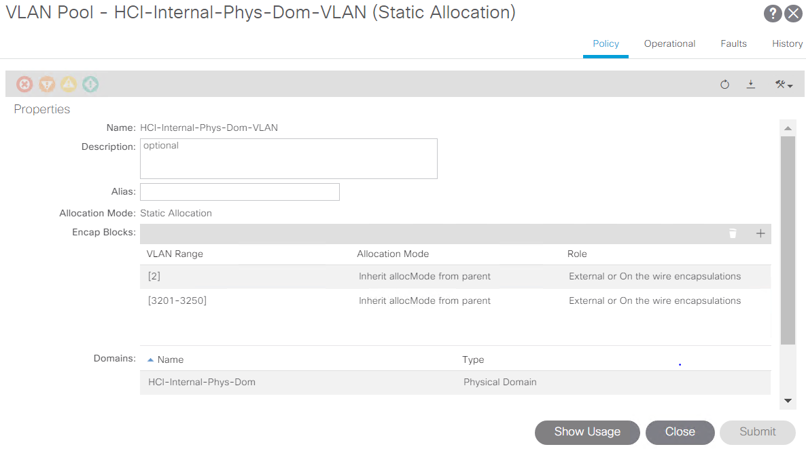
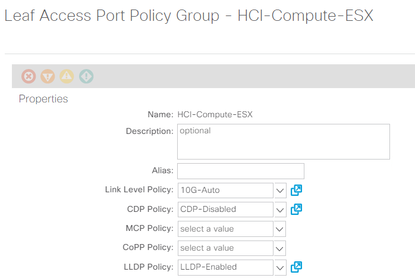
Use an access port policy group for interfaces connecting to NetApp HCI compute nodes, and use vPC policy group for interfaces to NetApp HCI storage nodes. -
Create and assign contracts for tightly-controlled access between workloads. For more information on configuring the contracts, see the guide here.
-
Install and configure NetApp HCI using NDE. NDE configures all the required parameters, including VDS port groups for networking, and also installs the mNode VM. See the deployment guide for more information.
-
Though VMM integration of Cisco ACI with VMware VDS is optional, using the VMM integration feature is a best practice. When not using VMM integration, an NDE-installed VDS can be used for networking with physical domain attachment on Cisco ACI.
-
If you are using VMM integration, NDE-installed VDS cannot be fully managed by ACI and can be added as read-only VMM domain. To avoid that scenario and make efficient use of Cisco ACI’s VMM networking feature, create a new VMware VMM domain in ACI with an explicit dynamic VLAN pool. The VMM domain created can integrate with any supported virtual switch.
-
Integrate with VDS. If you wish to integrate ACI with VDS, select the virtual switch type to be VMware Distributed Switch. Consider the configuration best practices noted in the following table. See the configuration guide for more details.
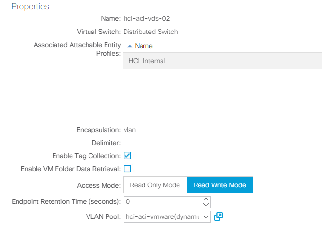
-
Integrate with Cisco AVE. If you are integrating Cisco AVE with Cisco ACI, select the virtual switch type to be Cisco AVE. Cisco AVE requires a unique VLAN pool of type Internal for communicating between internal and external port groups. Follow the configuration best practices noted in this table. See the installation guide to install and configure Cisco AVE.
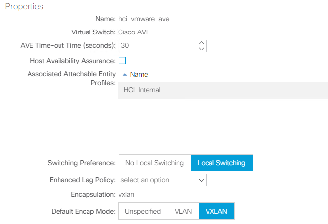
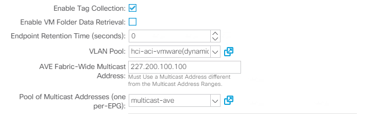
-
-
Attach the VMM domain to the EPGs using Pre-Provision Resolution Immediacy. Then migrate all the VMNICs, VMkernel ports, and VNICs from the NDE-created VDS to ACI-created VDS or AVE and so on. Configure the uplink failover and teaming policy for iSCSI-A and iSCSI-B to have one active uplink each. VMs can now attach their VMNICs to ACI-created port groups to access network resources. The port groups on VDS that are managed by Cisco ACI are in the format of
<tenant-name>|<application-profile-name>|<epg-name>.Pre-Provision Resolution Immediacy is required to ensure the port policies are downloaded to the leaf switch even before the VMM controller is attached to the virtual switch. 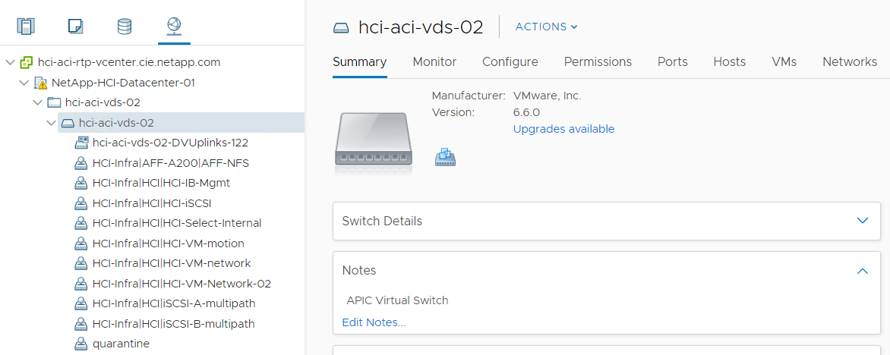
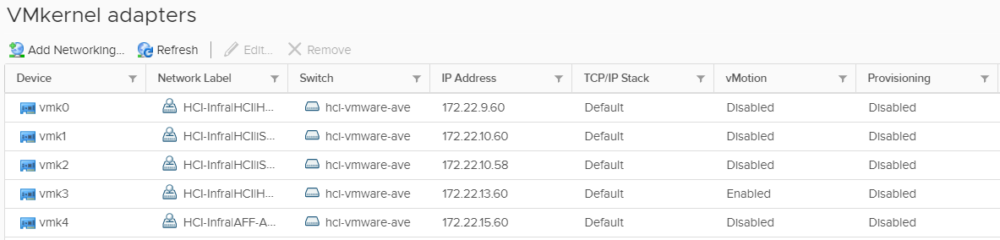
-
If you intend to use micro-segmentation, then create micro-segment (uSeg) EPGs attaching to the right BD. Create attributes in VMware vSphere and attach them to the required VMs. Ensure the VMM domain has Enable Tag Collection enabled. Configure the uSeg EPGs with the corresponding attribute and attach the VMM domain to it. This provides more granular control of communication on the endpoint VMs.
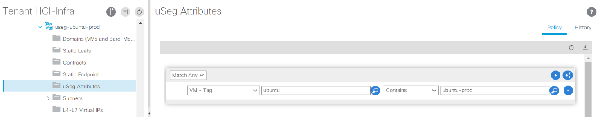
The networking functionality for VMware vSphere on NetApp HCI in this solution is provided either using VMware VDS or Cisco AVE.
VMware VDS
VMware vSphere Distributed Switch (VDS) is a virtual switch that connects to multiple ESXi hosts in the cluster or set of clusters allowing virtual machines to maintain consistent network configuration as they migrate across multiple hosts. VDS also provides for centralized management of network configurations in a vSphere environment. For more details, see the VDS documentation.
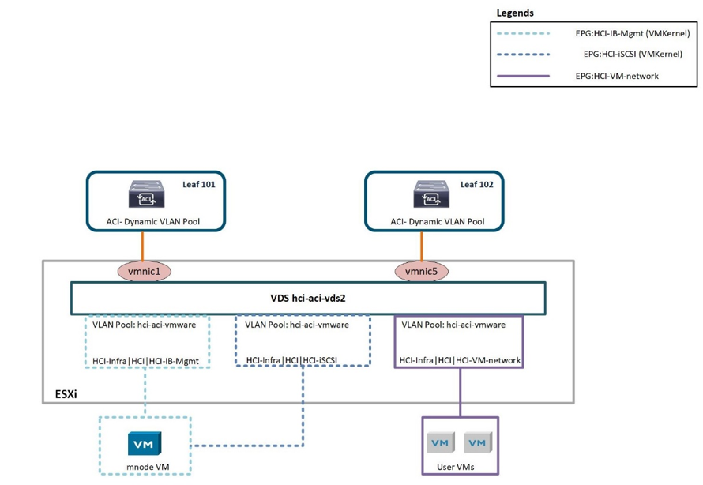
The following table outlines the necessary parameters and best practices for configuring and integrating Cisco ACI with VMware VDS.
| Resource | Configuration Considerations | Best Practices |
|---|---|---|
Endpoint groups |
|
|
Interface policy |
|
|
VMM Integration |
|
|
VDS |
|
|
For traffic load-balancing, port channels with vPCs can be used on Cisco ACI along with LAGs on VDS with LACP in active mode. However, using LACP can affect storage performance when compared to iSCSI multipathing.
Cisco AVE
Cisco ACI Virtual Edge (AVE) is a virtual switch offering by Cisco that extends the Cisco ACI policy model to virtual infrastructure. It is a hypervisor- independent distributed network service that sits on top of the native virtual switch of the hypervisor. It leverages the underlying virtual switch using a VM-based solution to provide network visibility into the virtual environments. For more details on Cisco AVE, see the documentation. The following figure depicts the internal networking of Cisco AVE on an ESXi host (as tested).
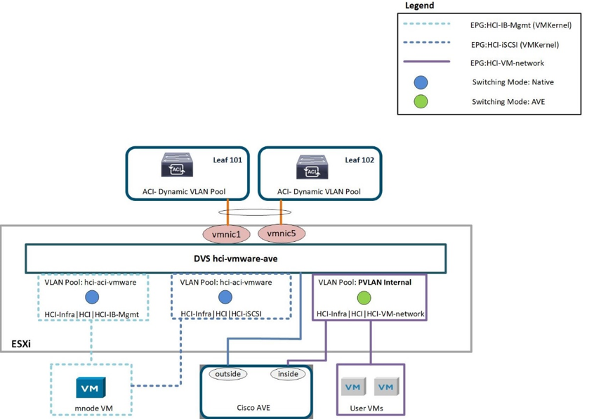
The following table lists the necessary parameters and best practices for configuring and integrating Cisco ACI with Cisco AVE on VMware ESXi. Cisco AVE is currently only supported with VMware vSphere.
| Resource | Configuration Considerations | Best Practices |
|---|---|---|
Endpoint Groups |
Separate EPG for native VLANs |
Separate VLAN pool for VMM domain with dynamic allocation turned on |
Interface Policy |
|
|
VMM Integration |
|
|
VDS |
|
|
| For traffic load balancing, port channel with vPCs can be used on Cisco ACI along with LAGs on ESXi hosts with LACP in active mode. However, using LACP can affect storage performance when compared to iSCSI multipathing. |
Red Hat Virtualization: NetApp HCI with Cisco ACI
Red Hat Virtualization (RHV) is an enterprise virtual data center platform that runs on Red Hat Enterprise Linux using the KVM hypervisor. The key components of RHV include Red Hat Virtualization Hosts (RHV- H) and the Red Hat Virtualization Manager (RHV- M). RHV-M provides centralized, enterprise-grade management for the physical and logical resources within the virtualized RHV environment. RHV-H is a minimal, light-weight operating system based on Red Hat Enterprise Linux that is optimized for the ease of setting up physical servers as RHV hypervisors. For more information on RHV, see the documentation here. The following figure provides an overview of RHV.
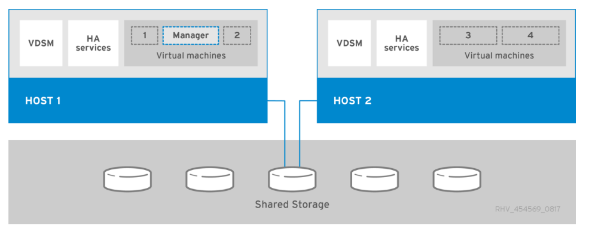
Starting with Cisco APIC release 3.1, Cisco ACI supports VMM integration with Red Hat Virtualization environments. The RHV VMM domain in Cisco APIC is connected to RHV-M and directly associated with a data center object. All the RHV-H clusters under this data center are considered part of the VMM domain. Cisco ACI automatically creates logical networks in RHV- M when the EPGs are attached to the RHV VMM domain in ACI. RHV hosts that are part of a Red Hat VMM domain can use Linux bridge or Open vSwitch as its virtual switch. This integration simplifies and automates networking configuration on RHV-M, saving a lot of manual work for system and network administrators.
Workflow
The following workflow is used to set up the virtual environment. Each of these steps might involve several individual tasks.
-
Install and configure Nexus 9000 switches in ACI mode and APIC software on the UCS C-series server. Refer to the Install and Upgrade documentation for detailed steps.
-
Configure and setup the ACI fabric by referring to the documentation.
-
Configure tenants, application profiles, bridge domains, and EPGs required for NetApp HCI nodes. NetApp recommends using one BD to one EPG framework, except for iSCSI. See the documentation here for more details. The minimum set of EPGs required are in-band management, iSCSI, VM motion, VM-data network, and native.
-
Create the VLAN pool, physical domain, and AEP based on the requirements. Create the switch and interface profiles and policies for vPCs and individual ports. Then attach the physical domain and configure the static paths to the EPGs. see the configuration guide for more details. This table lists best practices for integrating ACI with Linux bridge on RHV.
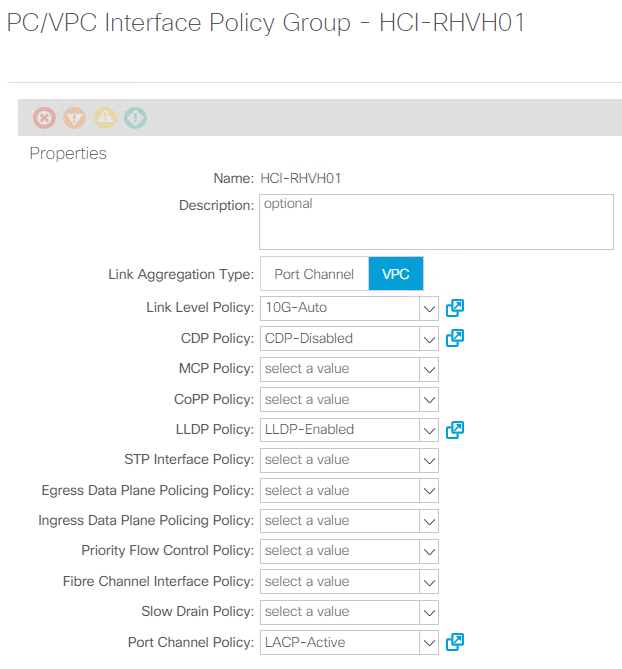
Use a vPC policy group for interfaces connecting to NetApp HCI storage and compute nodes. -
Create and assign contracts for tightly controlled access between workloads. For more information on configuring the contracts, see the guide here.
-
Install and configure the NetApp HCI Element cluster. Do not use NDE for this install; rather, install a standalone Element cluster on the HCI storage nodes. Then configure the required volumes for installation of RHV. Install RHV on NetApp HCI. Refer to RHV on NetApp HCI NVA for more details.
-
RHV installation creates a default management network called ovirtmgmt. Though VMM integration of Cisco ACI with RHV is optional, leveraging VMM integration is preferred. Do not create other logical networks manually. To use Cisco ACI VMM integration, create a Red Hat VMM domain and attach the VMM domain to all the required EPGs, using Pre- Provision Resolution Immediacy. This process automatically creates corresponding logical networks and vNIC profiles. The vNIC profiles can be directly used to attach to hosts and VMs for their communication. The networks that are managed by Cisco ACI are in the format
<tenant-name>|<application-profile-name>|<epg-name>tagged with a label of formataci_<rhv-vmm-domain-name>. See Cisco’s whitepaper for creating and configuring a VMM domain for RHV. Also, see this table for best practices when integrating RHV on NetApp HCI with Cisco ACI.Except for ovirtmgmt, all other logical networks can be managed by Cisco ACI. 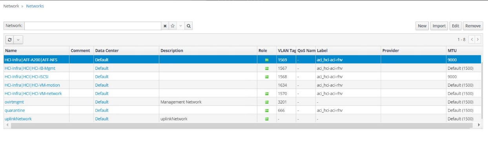
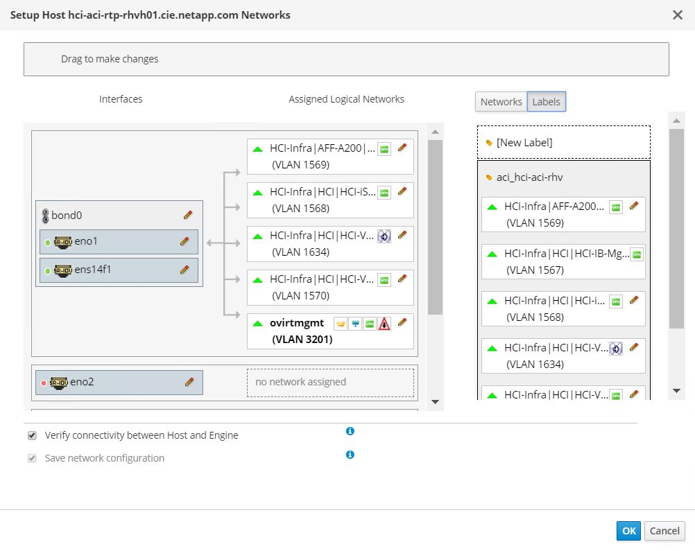
The networking functionality for RHVH hosts in this solution is provided by Linux bridge.
Linux Bridge
Linux Bridge is a default virtual switch on all Linux distributions that is usually used with KVM/QEMU-based hypervisors. It is designated to forward traffic between networks based on MAC addresses and thus is regarded as a layer-2 virtual switch. For more information, see the documentation here. The following figure depicts the internal networking of Linux Bridge on RHV-H (as tested).
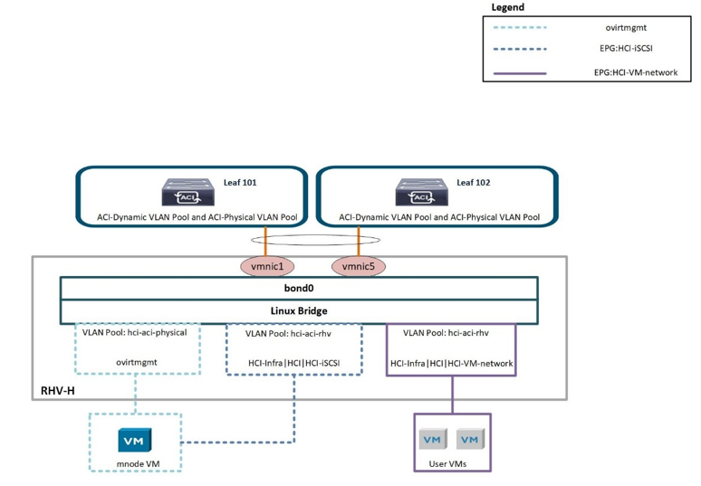
The following table outlines the necessary parameters and best practices for configuring and integrating Cisco ACI with Linux Bridge on RHV hosts.
| Resource | Configuration considerations | Best Practices |
|---|---|---|
Endpoint groups |
|
|
Interface policy |
|
|
VMM Integration |
Do not migrate host management logical interfaces from ovirtmgmt to any other logical network |
iSCSI host logical interface to be migrated to iSCSI logical network managed by ACI VMM integration |
| Except for the ovirtmgmt logical network, it is possible to create all other infrastructure logical networks on Cisco APIC and map them to the VMM domain. ‘ovirtmgmt’ logical network uses the static path binding on the In-band management EPG attached with the physical domain. |
 Edit on GitHub
Edit on GitHub